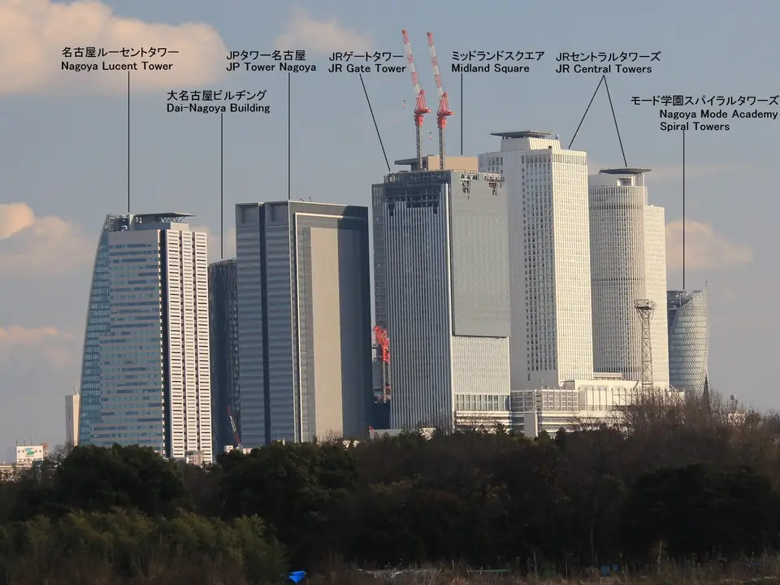

- Bereich
- Kurz vor Nagoya
- Sitzseite
- Platz E · rechts Richtung Shin-Osaka; links Richtung Tokyo
- Zeitpunkt
- Etwa 94 Minuten nach der Abfahrt aus Tokio mit einem Nozomi
- Sichtdauer
- Mehrere Dutzend SekundenUngefähre Nozomi-Zeit; abhängig von Zuggeschwindigkeit, Wetter und Sichthindernissen.
DIE GESCHICHTE
Welcher Turm ist welcher?
Das Gebiet direkt vor dem Bahnhof Nagoya, vor Ort Meieki genannt, gehört zu den am stärksten umgestalteten Bahnhofsvierteln Japans in der Heisei- und Reiwa-Zeit. 1999 erhoben sich die JR Central Towers direkt über dem Bahnhof als Komplex aus Büros, Hotel und Kaufhaus und zeichneten Nagoyas Silhouette neu. Es folgten Midland Square (Sitz von Toyotas Nagoya-Büro und weiteren Mietern) 2007, Mode Gakuen Spiral Towers 2008 und JR Gate Tower 2017 – zwei Jahrzehnte Hochhausbau, die Meieki zu einer der dichtesten Hochhausansammlungen Japans gemacht haben.
Wenn Sie von Tokio nach Shin-Osaka reisen, schauen Sie beim Annähern an Nagoya aus dem rechten Fenster (Platz E). In Richtung Tokio ist die Reihenfolge umgekehrt, und derselbe Platz E befindet sich links.
WAS SIE SEHEN
Die wichtigsten Türme, einer nach dem anderen
JR Central Towers (1999) – die Zwillingstürme direkt über dem Bahnhof, mit 245 m auf der Büroseite und 226 m auf der Hotelseite. Bei der Eröffnung definierte dieser Komplex neu, was ein japanisches Bahnhofsgebäude sein konnte, und erregte internationale Aufmerksamkeit.

JR Gate Tower (2017) – ein etwa 220 m hoher Turm mit gemischter Nutzung neben JR Central Towers, direkt mit dem Bahnhof Nagoya verbunden. Die unteren Stockwerke beherbergen die JR Nagoya Takashimaya Gate Tower Mall, die oberen Büros und ein Hotel.
Mode Gakuen Spiral Towers (2008) – das 170 m hohe Schulgebäude mit der markantesten Silhouette in Meieki. Drei senkrechte Streifen aus weißer Vorhangfassade, dunklen Metallpaneelen und silbernem Glas winden sich spiralförmig um den Turm nach oben. Er beherbergt drei Berufsschulen (HAL, Mode Gakuen und Nagoya Isen) und hat mehrere Architekturpreise gewonnen.
Midland Square (2007) – ein 247 m hoher Komplex mit gemischter Nutzung, in dem Toyotas Nagoya-Büro und weitere Mieter untergebracht sind. Boutiquen füllen die unteren Stockwerke, Büros die mittleren, und die Freiluft-Aussichtsplattform „Sky Promenade“ krönt die Spitze. Sie ist auch ein bekannter Ort für nächtliche Ausblicke.
In der Nähe stehen weitere Türme wie das Dai Nagoya Building (2015 fertiggestellt und 2016 vollständig eröffnet, etwa 175 m) und Nagoya Lucent Tower (2007, 180 m). Vom Zug aus erscheint die Silhouette deshalb als Überlagerung zahlreicher Hochhäuser.
AUF DER KARTE
Standort auf einen Blick
Karte öffnenZwischen der Sehenswürdigkeit und dem Aussichtspunkt im Shinkansen wechseln.
IHR GUIDE FÜR UNTERWEGS
Verpassen Sie nicht den Ausblick
WEITERFÜHRENDE LEKTÜRE
Quellen
Offizielle Informationen und Aufzeichnungen von Ausblicken.